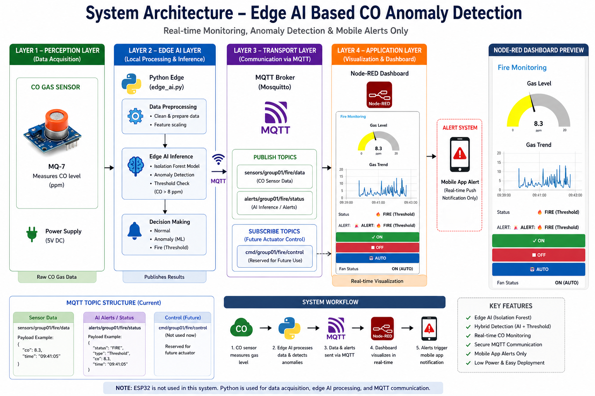
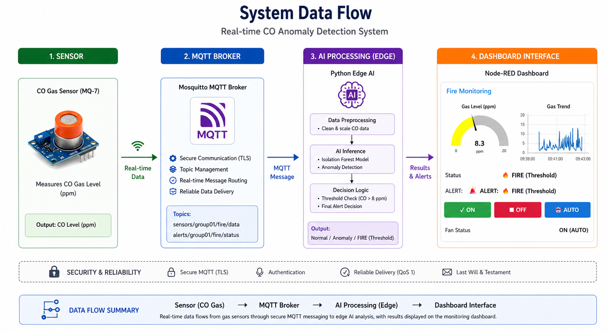
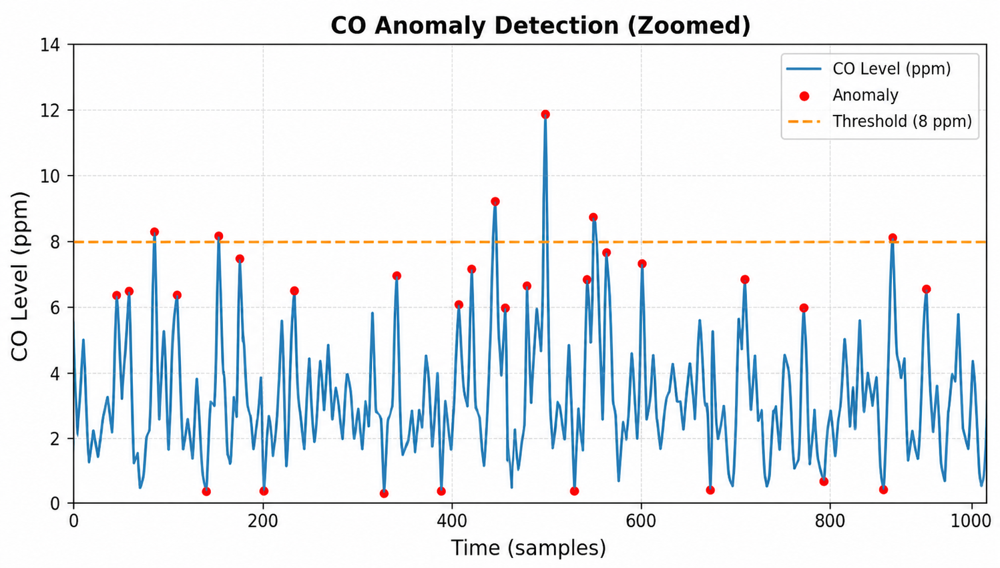
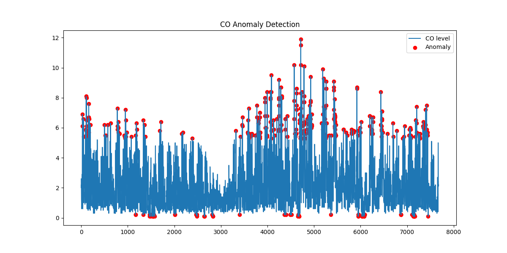
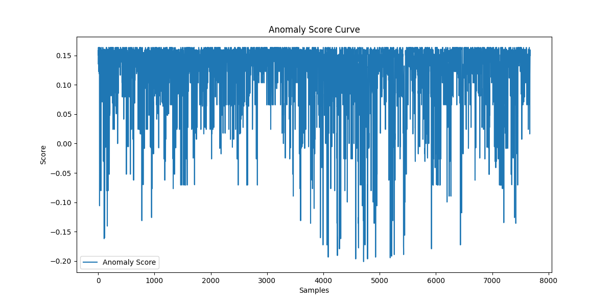
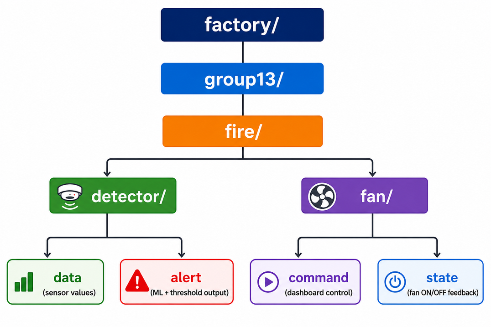
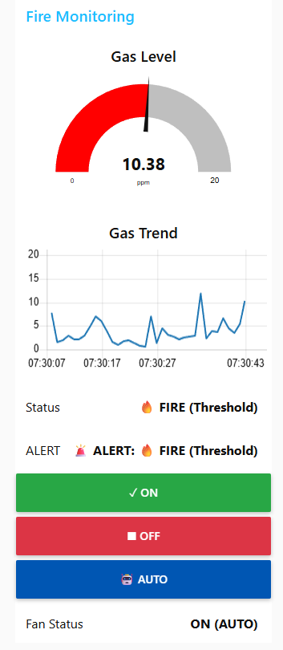

This project presents an Edge AI based fire and smoke monitoring system designed for industrial environments. The system combines simulated gas sensor data, machine learning based anomaly detection, MQTT messaging, a Node-RED dashboard, and an exhaust fan actuator to support real-time hazard detection and response. Based on the repository and attached project materials, the solution was designed around a four-layer architecture consisting of perception, edge intelligence, transport, and application layers. The implementation uses CO gas readings from the UCI Air Quality dataset, an Isolation Forest model for anomaly detection, Docker Compose for multi-service deployment, and MQTT for lightweight publish-subscribe communication. The final outcome is a modular industrial IoT prototype that demonstrates how edge analytics, visualization, and automated control can be integrated into a fire monitoring workflow.
Industrial fire monitoring requires fast detection, reliable messaging, and clear operator visibility. Traditional threshold-only systems can miss subtle abnormal patterns or generate unnecessary alarms. This project addresses that problem by combining threshold-based detection for immediate high-risk conditions with machine learning based anomaly detection for unusual but potentially dangerous behavior. The project was developed as an industrial networks and edge AI system, with the goal of showing how sensing, analytics, messaging, dashboards, and actuation can be integrated into a single deployable pipeline.
The proposed system is an Edge AI–based fire detection and monitoring solution designed to provide real-time industrial safety through a structured data pipeline. It begins with the perception layer, where an MQ-7 carbon monoxide (CO) gas sensor continuously measures gas concentration levels in parts per million (ppm). This raw sensor data is then processed in the edge AI layer, where a Python-based model performs data preprocessing, anomaly detection using an Isolation Forest algorithm, and threshold-based fire detection. By executing these computations locally, the system ensures low latency and reduces dependency on cloud services. The processed results are transmitted through the transport layer, which utilizes an MQTT broker (Mosquitto) to enable lightweight, secure, and real-time communication using a publish/subscribe mechanism. Relevant topics are used to send sensor readings and alert statuses efficiently. Finally, in the application layer, a Node-RED dashboard provides an intuitive interface for visualizing gas levels, trends, and system status, while also displaying alerts such as normal, anomaly, or fire conditions. Overall, the system follows a modular four-layer architecture that ensures scalability, efficient communication, and rapid response, making it highly suitable for real-time industrial monitoring and fire detection applications.


The project uses the Air Quality dataset. The simulation pipeline uses the CO(GT) column as the primary sensor variable. Before use, the data is cleaned by converting comma-based decimals into numeric values, removing invalid readings such as -200, and dropping missing values. There are 7,674 valid CO samples with a minimum value of 0.1, a maximum value of 11.9, and an average of 2.1527. The mqtt publisher iterates through these values and injects additional anomalies with a 5 percent probability to simulate fire-like spikes.
The anomaly detector was built using StandardScaler for feature normalization and IsolationForest with n_estimators=200, contamination rate 0.05, and random state 42. Used CO as a single-feature input after renaming CO(GT) to CO.
The evaluation metrics are:



The runtime detector in edge_ai.py combines machine learning and explicit threshold logic. The code classifies messages as FIRE (Threshold) if gas is greater than 8 ppm, ANOMALY (ML) if the model flags an anomaly, and Normal otherwise. This hybrid approach is useful because threshold logic handles obvious emergency conditions while anomaly detection can highlight abnormal behavior before it becomes an extreme reading.
The project uses MQTT as the messaging backbone. The repository currently shows message exchange between the publisher, edge detector, actuator controller, and Node-RED dashboard. The implementation uses topic paths under factory/group01/fire/...

The live operator interface built with Node-RED Dashboard components, including a gas gauge, line chart for gas trend, status text display, alert display, fan ON button, fan OFF button, fan AUTO button, and fan state text. The actuator module in actuator_controller supports AUTO mode, where the fan state is determined by gas threshold or anomaly detection, and MANUAL mode, where the operator explicitly sends ON or OFF commands from the dashboard.

Docker-compose defines three main services: mqtt for the Mosquitto broker, node-red for visualization and control, and python-edge for the data publisher and detector. This deployment structure supports easier setup, service isolation, and repeatable testing. The Python container is built from python/Dockerfile, while the broker uses a custom Mosquitto image from mosquitto/Dockerfile.
The project successfully demonstrates real-time streaming of gas data through MQTT, local anomaly detection using an edge AI model, hybrid classification of normal, anomaly, and fire states, live dashboard visualization of values and alerts, automatic and manual control of an exhaust fan actuator, and multi-container orchestration using Docker Compose. The system design also shows good modular separation between sensing, analytics, messaging, user interface, and actuation.
For security, MQTT authentication is implemented using a username and password, with the Mosquitto broker configured to allow only credential-based access. This ensures that only authorized clients can connect to the messaging system, thereby preventing unauthorized data transmission and enhancing overall system protection. In terms of reliability, an automatic MQTT reconnection mechanism is integrated into the Edge AI module. This enables the system to detect connection losses, automatically attempt reconnection, and recover without requiring manual intervention. As a result, the system maintains continuous operation, improves fault tolerance, and ensures consistent data flow even in the presence of network disruptions.
The Fire/Smoke Detection System is a well-structured industrial IoT prototype that combines edge analytics, MQTT communication, live visualization, and actuator control into a unified workflow. The project demonstrates how anomaly detection can improve fire monitoring beyond simple threshold rules and how containerized deployment can simplify multi-service system integration. Overall, this project is a strong demonstration of applied edge AI for industrial safety, with a clear path toward stronger security, hardware integration, and production readiness.
node-red-dashboard. Available at: https://flows.nodered.org/node/node-red-dashboard